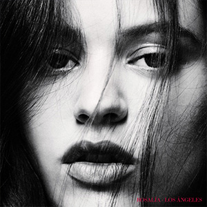
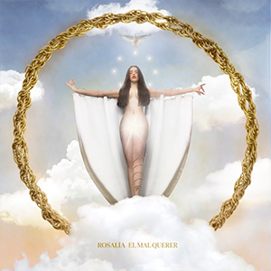
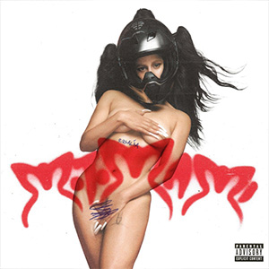
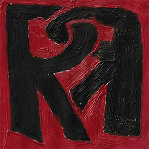

Rosalía Vila Tobella nació el 25 de septiembre de 1993, es la hija menor de José Manuel Vila y Pilar Tobella, su hermana es Pilar Vila Tobella, quien trabaja ahora como su estilista. Su pasión por la música proviene de su padre, quien la instó a cantar cuando tenía siete años. Cuando cumplió los diez años, la flamenca empezó su formación musical, yendo a la escuela de música desde joven. A los 17 años Rosalía sufrió una lesión en sus cuerdas vocales, lo que le requirió someterse a cirugía. Tras su recuperación la cantante volvió a la Escuela Superior de Música de Cataluña, donde se graduó con una especialidad en flamenco. El primer encuentro de Rosalía con la industria de la música fue en 2008, cuando la cantante se presentó en el programa de televisión español Tú sí que vales a los 15 años. Rosalía interpretó su versión de la canción Como en un mar eterno de Hanna, pero no fue seleccionada para el programa. Al inicio de su carrera estuvo involucrada en varios proyectos que la pusieron en el radar de la música española, la cantante participó en un dúo con Juan Gómez ‘Chicuelo’ en el Festival Internacional de Cine de 2013 de Panamá y el famoso Festival Grec de Barcelona. Colaboró en un espectáculo de La Fura Dels Baus en 2015, llevándola a presentarse en Singapur. Rosalía colaboró con la marca de moda Desigual en un single para su campaña de 2015, Last Night Was Eternal, también trabajaba como maestra de flamenco y se presentaba en bares musicales. En 2016 se presentó en el Tablao del Carmen, un lugar de flamenco en Barcelona. En la audiencia se encontraba el cantante y productor musical Raul Refree, al que Rosalía cautivó con su talento y la ayudaría a construir su primer álbum de estudio. Los Ángeles, el álbum debut de Rosalía, fue publicado el 10 de febrero de 2017 bajo el sello de Universal Music, los singles iniciales fueron Catalina y De Plata. La cantante flamenca inició un tour promocional para su álbum junto a Refree, comenzando con una presentación inicial en febrero de 2017 en Granada y cerrando en marzo de 2018 en el Palau de la Música de Barcelona.
Sus principales influencias musicales son Camarón de la isla, James Blake y Kate Bush.
A los 20 años trabajó como profesora de flamenco y entrenamiento de canto.
Lo primero que come en el desayuno es una tostada de maíz con aguacate, jamón de pavo, aceite de oliva y sal.
Sus lugares favoritos son: Japón, Nueva York y España.
Aprendió a manejar moto a los siete años. Le enseñó a su padre.
Por la noche se hace un tratamiento facial que incluye exfoliación, sérum, cremas y parches para los ojos. Dice que duerme poco y amanece con los ojos hinchados.
La sala ‘Apolo’ de Barcelona es su lugar favorito para ir a bailar.
Su álbum debut, Los Ángeles, habla de la muerte de una manera oscura con acordes de guitarra agresivos de Refree. Presenta reelaboraciones de clásicos del flamenco recibiendo varios elogios. Fue nominada a mejor artista nuevo en la 18.ª entrega de los Premios Grammy Latinos. El álbum fue lanzado el 10 de febrero de 2017 a través de Universal Music y generó dos sencillos, «Catalina», lanzado en octubre de 2016, y «De plata», lanzado en agosto de 2017.
El ciclo de grabación del segundo disco de estudio de Rosalía, El mal querer, comenzó a principios de 2017 como su proyecto de bachillerato, graduándose en la Escuela Superior de Música de Cataluña. Ella personalmente eligió trabajar junto al músico español El Guincho y generó su concepto junto a su amigo Ferran Echegaray, quien apostó por el Romance de Flamenca para seguir la línea argumental del disco. Así, cada canción del disco sería un capítulo de la historia narrada en la novela anónima occitana. El mal querer fue lanzado el 2 de noviembre de 2018.
El 2 de noviembre de 2021, Rosalía anunció el título de su nuevo álbum Motomami. Fue lanzado el 18 de marzo de 2022 a través de Columbia Records. La promoción antes del lanzamiento del álbum abarcó el lanzamiento de tres sencillos y los sencillos promocionales «Hentai» y «Candy». El sencillo principal «La fama», con The Weeknd, es una bachata experimental que tuvo un gran éxito comercial. Se convirtió en el séptimo sencillo número uno de Rosalía en España, al mismo tiempo que alcanzó el quinto lugar en Francia y alcanzó el top 10 en otros ocho países.
RR (estilizado como RЯ o R∞Я) es un extended play (EP) colaborativo de la cantante española Rosalía y el cantante puertorriqueño Rauw Alejandro. Fue lanzado el 24 de marzo de 2023.
